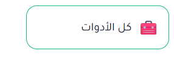
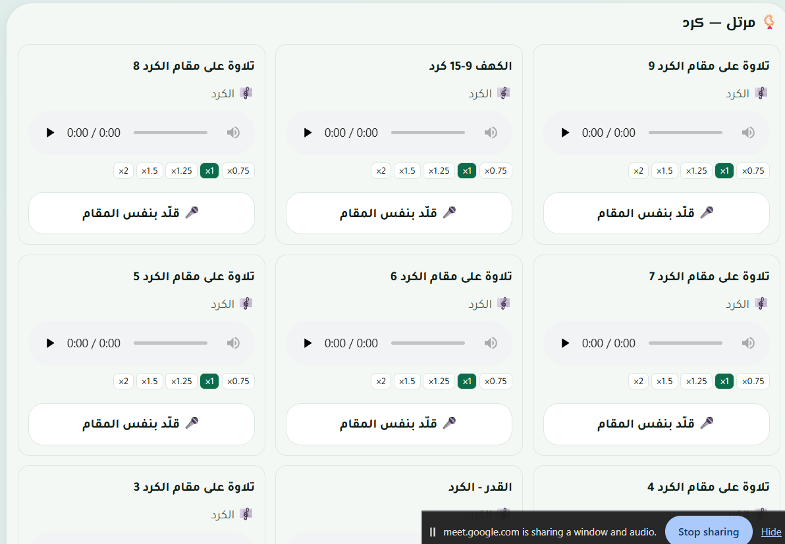

project
كمان اديني اشوف ايه اللي يتعرض وايه اللي لا للطالب بالتفصيل.. حتي الايقونات الصغيره ..اخفي حاجه حاجه
واعمل تطبيق علي الكل بحيث تتطبق علي كل الصفحات اللي شبهها
زي صفحات المقامات التانيه وهكذا
حط في دي الادوات اللي مش موجودة في اي قسم ..
خلينا انا اختر من الموقع ايه اللي جواها من بين كل الادوات ..َضيفلي اوبشن زي ماقلتلك اعرف ارتب كل فولدر كاني برتب
حط فيها بشكل افتراضي كل الادوات المسلم اللي مش موجودة في حته تانية
وخلي اسمها ادوات المسلم


شيل دي خليا في ثسم الابتهالات اللي داخل كل مقاما

في القسم دا
ماتحطش المقامت الفرعية في الاساسي..
هي ليها قسم لوحده اسمه فرعي..وكل مقام اساسي هناك تحته المقامات الفرعية
يعني انا اضغط كرد .. يتعرض الفرعي بتاعي
ادخل علي كل مقام .. يجبلي صفحة كاملة زي الصفحة بتاعت كل مقام
فيها كل الخيارات
كمان الشريط اللي فوق دا يتشال .. والهيدر بتاعت مقام الكرد .. عاوز علطول ندخل علي الجزء اللي انا محتاجه اللي هو الشريط اللي تحت .. بتاع عن المقام والحاجات دي وكدا

مش مدي اوبشن اني اسجل ليه
بس اني اسمع صوت السيستم ..
كل الاقسام يكون فيها تسجيل وفيها سماع صوت

الأقسام والأدوات دا حطه فيه الأوبشنز اللي تحت
اللي ه
حك الفصل والحصص والمسابقات وأدوات المسلم زي اللي فوق كدا
أدوات المسلم قلت فيها الادوات اللي مش في اي حته في الموقع
كمان حط في الفصل والحصص وأدوات المسلم
خليها باسم حياة المسلم .. وحط في الفصل والحصص وحياة المسلم .. الوايت بورد
اللي اقولك حطه في حاجة .. حطه بنفس التقسيمة بتاعت الحاجة الأصلية

رتب دي بشكل منظم .. بدل مايعرض كل دا.. خليه معروض بشكل الصفحة تكون صغيره .. لانها لغبطة كدا .. اعرضهم بشكل منظم انت وظبط الدنيا


كمان فيه صفحات بتفتح في مكان تاني خالص
عاوز كل صفحة تفتح جوا صفحتها .. ماتفتحش في صفحة تانية .. لا هي موجودة وانا بعرضها جو الصفحة نفسها كexpand
حط في الوايت بورد انها شبه بتاعت مايكروسوفت واحسن
الصفحة تكون بتتحرك لفوق وتحت مش ثابته مكانها
كمان في الاخر فكرة اني اعمل كل اللي كتبته pdf او صور ب full الجودة بتاعتها
وارفعها علي الموقع في اي قسم حابه .. او ارفعها بطالب معين .. او لصفحة الطلاب عامة
فيه صفحة خاصة اني ارفع محتوي لكل الطلاب .. واحدد طلاب ايه
يعني مثلا طلاب المقامات بس .. طلاب كذا بس .. او كل الطلاب
كمان طالب بعينه
كمان يكون موجود في ادوات الطالب .. حطه برضه في صفحة المعلم .. الطالب يدخل يكتب حاجه وبعدين يرفع لملمعلم او ينزله عنده
كمان في صفحة الطالب عند المعلم وصفحة المعلم عند الطالب
بحيث في ثانية ادخل وافتح الوايت بورد واكتب حاجة وارفعهاله
حطها نفس بتاعت مايكروسوفت بالضبط
واحسن منها .. الاهم انهاماتكونش ليها حدود في حته معينه
في الاخر وانا بنزلها pdf يجيلي المساحة بس اللي انا عامل فيها.. لو طويلة تتقسم صفحات وكدا
قلتلك ماتكتبش مصادر تحت لا من مايكروسوفت ولا مصدر انه مقامات كذا ولا اكلمة من كدا
ماتكتبش اي حاجة كن دي
عري للاطفال - العربية الفصحي وحدات = سميها باسم العربية الفصحي .. شيبل وحدات دي …. حطهم في تكلم عربي
العربية الفصحي الكتاب التفاعلي دا و العربية الفصحي المنهج المتكامل ..دول حاجه واحدة .. خليهم منهج متكامل العربية الفصحي .. وماتخليش اليقونة تظهر لاي حد غري علي ماارفع العربية بين يديك فيها .. لماا بحاول ارفع العربية بين يديك ..بيعمل علامة صفرا انه مش بيقرأ المحتوي وكدا .. ولا بيسمع الصوت ظبط دا
كمان الصوت اللي في الكتاب يتعرض مواكب للموقع والكلمة بالضبط
لان هو مثلا ريكورد كامل للمحادقة كلها او السوال كامل
لا قطعه حسب الجملة او الكلمة المودودة .. وخليه يمشي بنفس ترتيب الكتاب .. انا مثلا المستوي الاول .. دخلت الوحدة الاولي فيه .. يمشي بنفس التريتب .. المحادثة .. بعدها صفحة صفحة زي الكتاب ..بس بشكل تفاعلي .. مش كله يتعرض مرة واحدة .. المعروض للطالب جزء بسيط بحيث يعرف يرطز فيه مش ثفحة كاملة
كمان العربي للاطفال مش فيه الا المستوي الاول بس
حط تحت كل المستويات زي الكتاب بتاع العربية يبن يدي اولادنا .. انا رافعه قبل كدا .. بنفس فكرة العربية بين يديك .. مش كله موجود وانا اختار
لا انا امشي خطوة خطوة شبخ الكتاب بالضبط
وماتكتبش مصادر قلتلك
كمان شيل كلمة مواقف من العربية المصرية دي
كمان انا رافعلك كتب كتير فيها .. انت حاطط المعلومات من كتاب واحد بس من اللي رفعتهم .. زود .. وبرضه يكون بنفس الاسلوب اللي قلته ..
مثلا المحادثة الاول .. بنفس العرض ..في الاول .. اشوف بس الكلام واقرأ ناا
بعدين اسمع بس .. بعدين تفاعلي ..أنا ارد وكدا
بعدين ناخد ادوات نجقظ الكلام دا واختبارات و العاب
بعدين قاعدة وادواتها و تحفظهالنا واختبارات والعاب
في نهاية كل وحدة يكون فيه امتحان علي الوحدة كاملة
ومايتفتحش كله .. لا يتفتج مستوي مستوي .. وحته حته ونكمل عليها
بس في الاول عادي اعمل اختباار واحدد المستوي .. وافتح كل اللي قبل مستوايا دا .. وابدأ من عند مستوايا
ظبط الشكل دا كله بحيث كله يكون بشكل تفاعلي مش ملغبط وانا اختار زي مانا عاوز وكدا
لا كل حاجه مترتبه وانا بس لالي اقدر افتح اي مستوي لاي طالب من صفحتي عند صفحة الطالب في صفحتي .. اقدر افتحله اي حاجه .. كذلك المعلم بتاعه مش شرط انا
مستويات كتيير ومحادثات كتير
وكل محادثة كبيرة .. زي المصادر بالضبط .. ماتنقصش حاجة من كل المصادر .. انت بس بترتبها باسلو بتفاعلي وبتزود هليخا مش بتنقص من اي محتوي
كل حاجة كريتيف .. كل حاجة تقربيا قربت تخلص .. العربي اللي سسئ كدا
ظبط الدنيا بليز في العربي بالذات
بشكل تفاعلي وكدا كل حاجة .. ونفس الكلام اللي في الكتب وكدا
ماتشيلش الموجود حاليا .. لانه كويس ..ابني عليه بالتعديلات دي

لما برجع ورا من اي صفحة يرجعني لمكاني
يعني مثلا نا داخل صفحة العربية للاطفال. .دخلت ورجعت ..يرجع نفس الشكل اللي كان مفتوح قبل ماادخل .. اللي هو العربية مفتوحه والصفحة عليها ..بنفس الشكل
كمان كل v تخلصه ..انا اقدر اعدل جواه هو .. اشيل حاجة ورجعها لاصلها واحط حاجة .. مش البتاع كله
وبرضه ممكن اختار الكل ارجعه للنسخه قبلها مثلا
انا رفعتلك الصرف التعليمي والنحو التعليمي والبلاغة
وانت حاطط بس فصول بسيطة من الكتب ..انا عاوز الكتب كاملة ي عم انت
وكذلك البلاغة . . مش فصول بسيطة
وحط الجزء دا بس برضه في علوم اسلامية
كمان لو الكتاب اتعمل كلام علي الموقع وفريكل واخد مساحة وخلاص .. والكتاب خلص .. شيلها من فيركل .. خلاص مادام خلصت
ماترفعش لينكات يوتيوب
هات الصوت والحاجه نفسها حطها في الموقع
هبعتلك كل الاناشيد اللي عندي طلع منها الهمهمات بتاعتها او الموسيقي بتاعتها يعني حطها في قسم انشد معي .. خليني بعدين اعرف اعملها تبويب داخلي ..لكل مقام الاناشيد بتاعته تحته
الصوت دا هتعمل فيه حاجتين .. طلع منه الخليفيه المسويفيه زي موقع mosis كدا .. وكمان الكلمات بتاعته
وخليع يتعرض زي موقع غني معي كدا ..
اللي هو الكلام مكتوب ومتحدد الجزء اللي اقوله .. واكمل بعده وكدا
كمان حط الاداة دي في مساحتي انا بس
اني ارفع النشيد يكتشف منه الموسيفي بتاعته والكلمات بعدين ادوس رفع .. يترفع بنفس الفكرة في المكان دا بتاع انشد معي ..
بص خلي اسلو العرض زي مانت عامل .. اني اختار النشيد
من فوق ماتحطش تبويبات انه مقام كذا وكذا .. انا ممكن اعدل بس اسم النشيد واكتب جنبه كرد او نهاوند او كدا
مثلا مكتوب
أنا العبد الذي كسب الذنوبا
تكون هي باينه اكتر او متحددة كلمة كلمة وانا ماشي عليها
وفي الخلفية الموسيقي بتاعتها وكدا ..
هبعتلك اناشيد كتير اعملها انت كدا
بس اديني ابوشن في سماحتي اني اي نشيد ارفعه يعمل كدا وبعدين ارفعه يتحط زي اخواته
زود كمان جمب التقزيم لشهري .. تقويم ميلادي .. جنبه هجري
والساعه دلوقتي بوقت الطالب
اديني برضه اني اختار شكل الساعه ازاي ,وتصميم التقويم ويبانو ازاي جنب بعض وفين بالضبط تصميمات واشكال كتير يكون ديناميك طدا وجميل
نسخة الموبايل والتابلت مش متعدلة اوي
اديني مساحة كدا جوا الموقع ..اني اختار النسخه بتاعت كل حاجة فيهم بتتعرض ازاي
واعدل عليها بنسختها .. بعيدا عن الموقع
يعني التعديل يتغير عليها هي بس ..او لو اخترت يتغير علي نسخه تانيه تمام
يعني في جزء اني اغير علي النسخة دي او تقولي غير علي دي كمان
شيل القسم دا من العربية .. خليني انا في العدادات احط الاصوات اللي تظهر للكل
فيه صوت طفل وصوت نساء وصوت رجل
لما بضغط علي الاصوات دي ..بيقرأ مرحبا كيف حالك
مش بيخلي المحادثة تحت تتقرأ بالصوت دا

https://itqan.academy/
خش علي الموقع دا وقولي ايه الحاجات الناقصه عندي فيه ..وايه الحلو عندهم مش عندي
ضيف كل شئ
في مساحتي انا وانا هرفع اللي محتاجه في اي وقت
لما حد يعنل sign up يدخل علطول علي confirm enail بعدها وتديله الخيار زي ماقلتلك ..اول مايعمل confirm يدخل علطول بدون مايختاج انه يعمل log in
هنا كمان لما يسجل بصوته يفتح ال next مباشر بدون مايضغط عليها
ويقرأ وحده

كمان مايتعملش انه completed علي االموقع الا لو هو اجتاز الاختبار 70% الاختبار مش بس اختيارات …فيه كل الاختبارات زي الكتب اللي رفعتها سواء العربية بين يديك او بين يدي اولادنا او كتب العامية المصرية
قلتلك هنا .. حط الفرانكو مع العربي مش مع الانجليزي

حط الاختيارات علي كل اختبار عشوائية مش بالتريبت عشان مايكونش حافظ التريتب ويتوقع الجاي
حط هنا قسم يكتب بخط أيده مش بالكيبورد .. وخلي الكيبورد يكتشف هو كتب ايه بالعربي
اكتشاف الكتابة يكون عربي مش انجليزي
متحطش كتابة بالكيبورد .. الكتابه يكون بالماوس او بالصباع او القلم بايده هو علي الكلام ..
واكتشف الكتابة .. زود المستشعرات عشان انت عارف انه مش native فكتابته مش هتكون صح ..

كمان لما يكتب كتابة حقيقية .. وتتكتب في الشريط بتاع الكتابة لافعليه .. خليه يعرف يعدل عليها عادي بعد كدا من الكيبورد الاصلي ..
كمان فيه رفع للمعلم في القسم دا
خلي برضضه في الاختبارات انه يتكلم والسيستم يكتشف كلامه ويقوله .. يعني مثلا اكتب الكلمة بالانجليزي او جملة بالانجليزي .. وخليه يقول يقولها ازاي بالعربي ..وهو يسجل وانت تكتشف الكلام صح ولا لا .. حسب انت حاطط لنفسك الكلمة بالعربي او الجملة وحط لنفسك خيارت كتير للترجمه يعني مش حاجة واحده بس .. جوا السسيتم بتاعك ..بحيث ممكن
الترتيب هنا غلط ..شوف الجملة مش مكتوبة صح .. تتكتب من اليمين للشمال زي العربي .. الحملة الاصلية تتحط عادي بالانجليزي شمال يمين .. بس العربي .. يتكتب من اليمين للشمال


مثلا .. يكتب مثلا قسم .. يكتب فيه زي ماقلنا بخط الايد
وقسم تحت يكتب المعني بالانجليزي قبل ما يضغط صح
الكتابة بالانجليزي عادي اختيار كيبورد او خط ايد
زود المستشعرات هنا

كمان فيه لاج في الصوت لما اضغط علي الصوت
خليه ياخد وقته في النطق في المحادثة لما يقف خالص وقف الريكورد ..مادام لسه بيتكلم ماتوقفش الكلام .
زود المستشعرات برضه للترجمات كتير
يعني مثلا
اذهب امشي .. نفس معني go
اقصد في الاسئلة المفتوحه حط خيارات كتير
كمان بص السوال دا مثلا .. مش منطقي .. انت حاطط اختيارت كلها تنفع .. كمان بص انت كاتب ازاي العربي من الشمال لليمين زي الانجليزي ..لا عاوزك تكتبه بالعربي عادي من اليمين للشمال .. الجملة الاصلية سيبها من الشمال .. العربي مكتوب فيها من اليميين للشمال
حط بس خيار واحد ينفع والباقي مينفعش

كمان اسئلة انه يسمع الصوت .. يكون في اختيار فوق للسماع في الاختيارات
وفيه اختيار تحت للمعني بالانجليزي .. كل واحده عليها درجو
السوال دا مثلا الولد انا سامعه بينطقه صح .. وانت بتقوله غلط
عشان المستشعرات قليلة ومفيش مجال واسع للاجابات ..فيه مجال واسع للاجابات مادام في نطاق الصحيح

المقروض دا سوال .. انه يتكلم ..انت مديله خيار يسمع هنا ليه .. لا يتكلم بس ..مفيش سماع هنا


شوف فيه حاجاات هنا مكتوبة عربي ..المفروض دي صفحة انجليزي … لو الطالب فاتح صفحة تانيه غير عربي..حط الكلمة العربي ..وجنبها المعني انجليزي
كمان الاسئلة اللي مفيش فيها خيار .. حط مدي واسع عندك في تقبل الاجابات المختلفه مادام في نطاق الصحيح
الكلمة تحتمل اكتر من معني ..ترتيب الجملة يحتمل اكتر من ترتيب ,,مش شرط الاجابة بس الي عندك
كمان فيه مدي واسع للنطق والسماع والكلام دا
الخيارات حط خيارات تكون كلها ماتنفعش اجابة صح .. واحده بس اللي تنفع صح
ألباقي كله علط
كل التعديلات دي راجع كل افسام العربي قسم قسم وضيفها عليه ..حتي الجديد اللي لسه هيتضاف يتحط بنفس الفكرة دي
وزي ماقلتلك زود اسئلة وحاجات تانيه كتيير جدا
انا هنا مثلا فتحت الاشعار انه طالب دخل ..افتحله المحتوي
المقروض يدخلني علي صفحة الطالب ..و ايميله متحدد مش لسه هفضل ادور فين ايميله
بعديم انا اخترت مثلا ايميل طالب..يتحدد تحت اوتاتيكي
كمان اديني اوبشن اني اختار عدد طلاب فنس الوقت واطبق عليهم نفس الفكرة
كمان قلتلك ضيفلي اني احدد ففلان مثلا قريب..اشيل اي علامة فيها فلوس من الموقع اي سعر ..عشان الحسد

قلل الخيارات شوية كمان .. مش يكون قسم كامل متحدد انا ممكن اختار القسم كامل او اضغط علي القسم يعممل تمدد وانا اختار من جواه محتوي محدد كمان من جوا المحتوي محدد محتوي محدد اكتر وهكذا
بحيث مش يتمدد ..انا في الاساس مختار الكل ..[عدين امدد براحتي نفس اللي في الاقسام
او اختيار الكل مباشر
حط الواجهة دي تحت الاقسام مباشرة في الصفحة الرئيسية